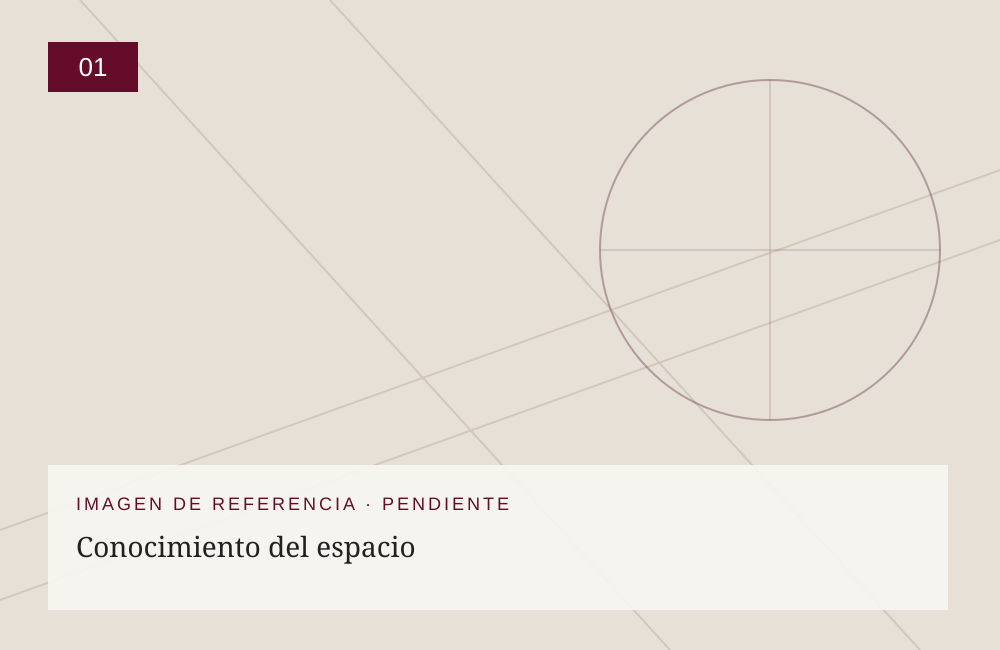
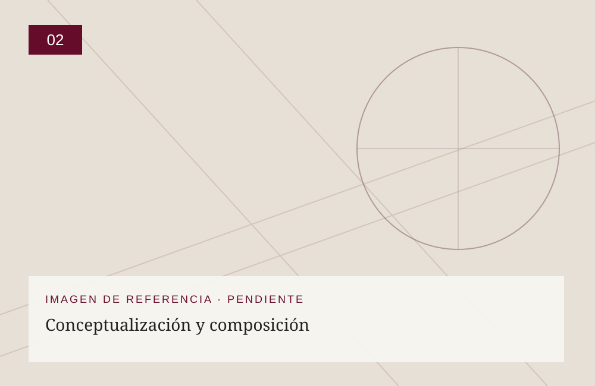
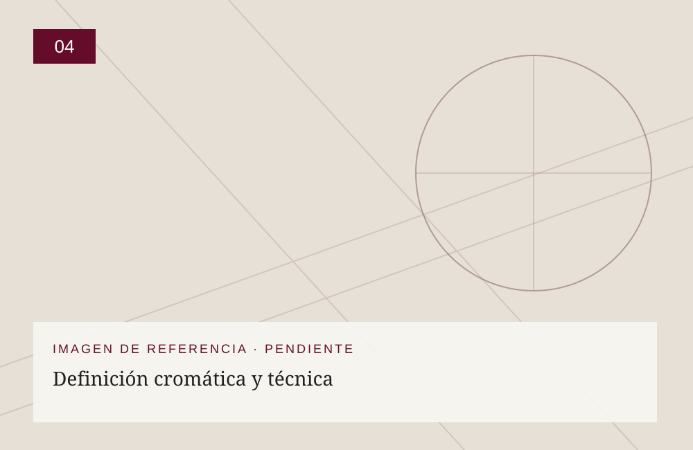
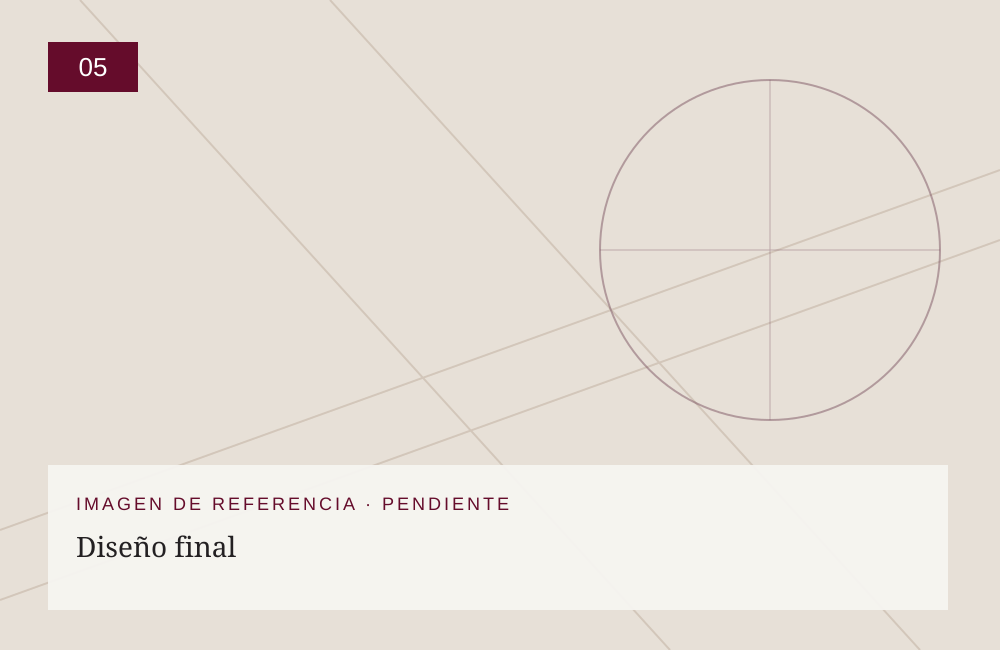

01
Conocimiento del espacio
Analizamos la arquitectura, la iluminación natural, las dimensiones y las necesidades del proyecto.
NUESTRO OFICIO / DISEÑO
En MAKI concebimos el diseño como un proceso creativo que integra arte, arquitectura, simbolismo y luz. Podemos reproducir e interpretar imágenes religiosas tradicionales, respetando su iconografía y significado, y desarrollar diseños originales, exclusivos e irrepetibles para cada proyecto. Estudiamos la composición, el color, los materiales y la viabilidad constructiva de cada propuesta.

EL PROCESO
Las imágenes de las etapas son referencias gráficas temporales. Se reemplazarán por fotografías reales del taller sin alterar el contenido ni la estructura de la página.

Analizamos la arquitectura, la iluminación natural, las dimensiones y las necesidades del proyecto.

Desarrollamos bocetos y propuestas gráficas a partir de los criterios artísticos, simbólicos y arquitectónicos.
Interpretamos iconografía religiosa tradicional o creamos composiciones originales de autor, según las necesidades del encargo.

Estudiamos colores, texturas, despieces, uniones y posibilidades de fabricación.

Preparamos la propuesta definitiva y su documentación para la fabricación.